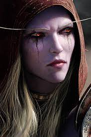

Сильвана Ветрокрылая

Когда-то Сильвана Ветрокрылая была храброй предводительницей следопытов Луносвета и командиром армий высших эльфов. Но во время Третьей Войны принц Артас во главе армии нежити вторгся в эльфийское королевство Кель'Талас.
Сильвана бросила все свои силы против орды живых мертвецов Плети, но в конечном итоге была повержена Рыцарем смерти Артасом и превращена в послушную рабыню - банши.
Проклятая и лишённая свободы воли, Сильвана вынуждена была служить своему хозяину до тех пор, пока Король-лич не ослабел настолько, что более не мог её контролировать. Восстав против Плети, Тёмная Госпожа и её мятежники - Отрёкшиеся захватили Подгород, провозгласив себя свободными и независимыми. Каким-то образом она вернула себе свою физическую форму, но её тело все ещё несёт в себе проклятие нежити, а потому прежняя жизнь для неё недоступна.
Теперь Сильвана мечтает лишь об одном – найти и уничтожить Артаса, которого ненавидит больше всего на свете, а также Короля-лича, чтобы отомстить за своё проклятие и принести окончательную свободу своим подданным. Кое-кто говорит, что во время превращения Сильваны в банши между ней и Королём-Личом установился некий вид связи, а потому её душу невозможно уничтожить окончательно, пока не уничтожен сам Король-лич.